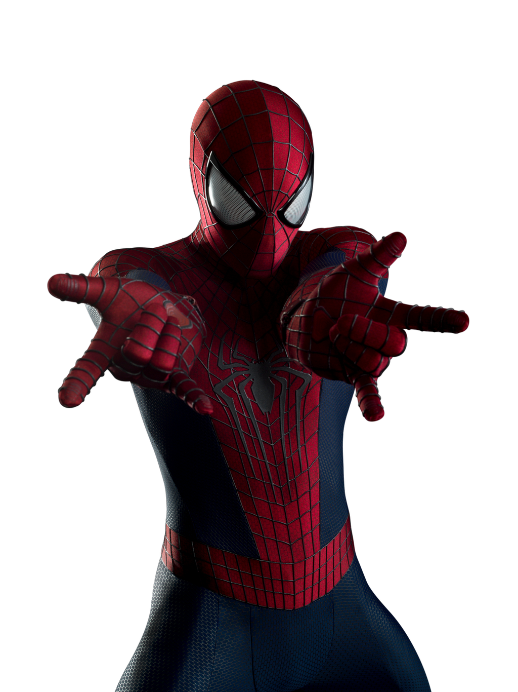
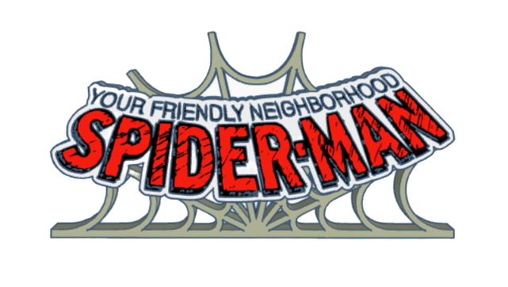
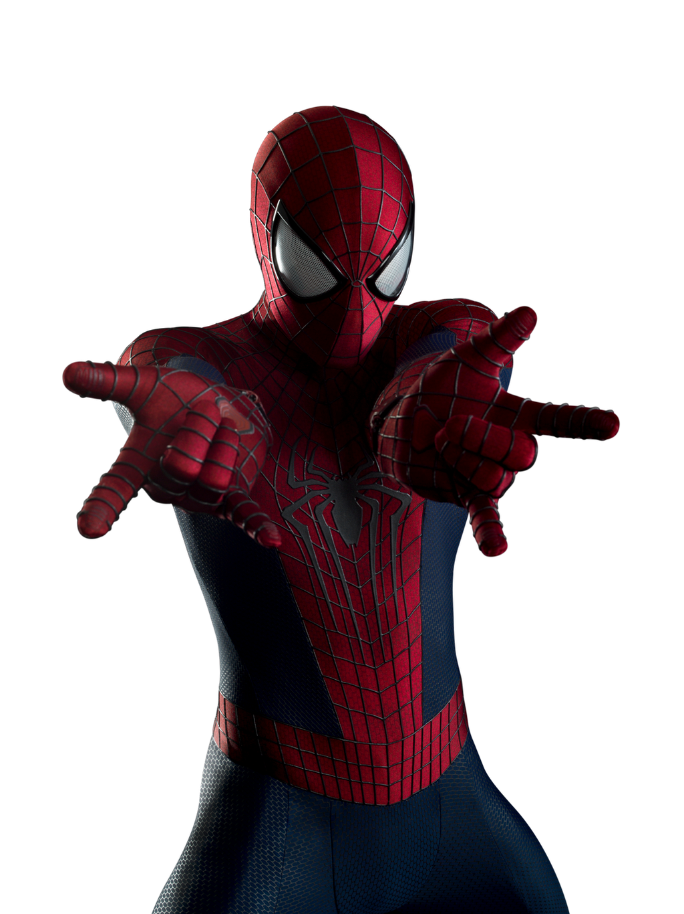
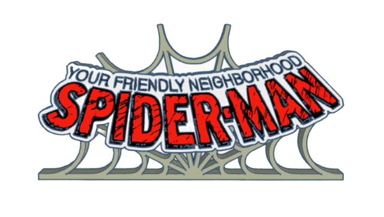

Spider-Man, also known as Peter Parker, is one of Marvel's most iconic and beloved superheroes. Created by legendary writer Stan Lee and artist Steve Ditko, Spider-Man first swung into action in Amazing Fantasy #15 in 1962, forever changing the world of comic books. What makes Spider-Man so unique is his relatability — behind the mask is Peter Parker, an ordinary teenager from Queens, New York, who struggles with everyday problems like school, relationships, and paying the bills, all while saving the city from supervillains.
Peter Parker was a shy, intelligent, and somewhat awkward teenager living in Queens, New York. Raised by his Aunt May and Uncle Ben after the death of his parents, Peter grew up as an ordinary kid with an extraordinary passion for science and technology. His life changed forever after being bitten by a radioactive spider during a school field trip, which granted him superhuman strength, unmatched agility, an uncanny ability to cling to walls, and an enhanced "spider-sense" that alerts him to danger. At first, Peter used his newfound powers selfishly, seeking fame and fortune as a masked wrestler and entertainer. However, his life took a tragic turn when his Uncle Ben was killed by a criminal that Peter could have stopped earlier. Devastated and wracked with guilt, Peter learned a painful but powerful lesson: "With great power comes great responsibility." From that moment on, he vowed to use his abilities not for personal gain but to protect the people of New York City, becoming the heroic Spider-Man — a figure who would inspire generations and stand as a symbol of sacrifice, perseverance, and doing the right thing no matter the cost.
Spider-Man has faced some of the most dangerous and memorable villains in the Marvel Universe, including the Green Goblin, Doctor Octopus, Venom, Sandman, and the Vulture. Each villain pushes Spider-Man to his limits, both physically and emotionally. The Green Goblin, also known as Norman Osborn, is perhaps Spider-Man’s most personal and dangerous enemy, using his genius-level intellect, advanced technology, and ruthless ambition to terrorize Peter Parker's life. Doctor Octopus, a brilliant but twisted scientist, combines his genius mind with powerful mechanical arms, often challenging Spider-Man both strategically and in sheer strength. Venom, born from an alien symbiote that once bonded with Peter, represents Spider-Man's darker side — a rival that knows his secrets, mimics his powers, and seeks vengeance. Sandman, a small-time criminal turned formidable foe, can reshape his body into a living weapon of sand, making him nearly indestructible. Meanwhile, the Vulture uses his advanced flight suit to rain destruction from above, testing Spider-Man's aerial skills and quick thinking. Beyond these foes, Spider-Man's rogues' gallery is vast, featuring villains like Mysterio, Lizard, Kingpin, and Rhino, each one challenging not only his physical abilities but also his resolve, compassion, and commitment to protect the people of New York City.
Spider-Man has faced some of the most dangerous and memorable villains in the Marvel Universe, including the Green Goblin, Doctor Octopus, Venom, Sandman, and the Vulture. Each villain pushes Spider-Man to his limits, both physically and emotionally. Click here to learn more!